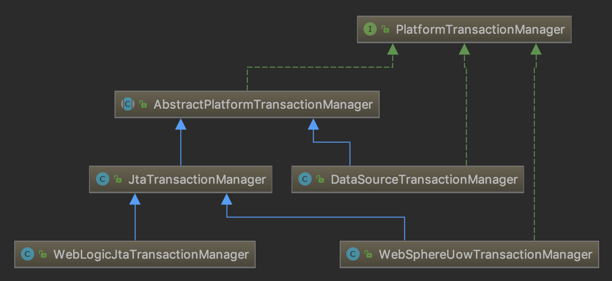
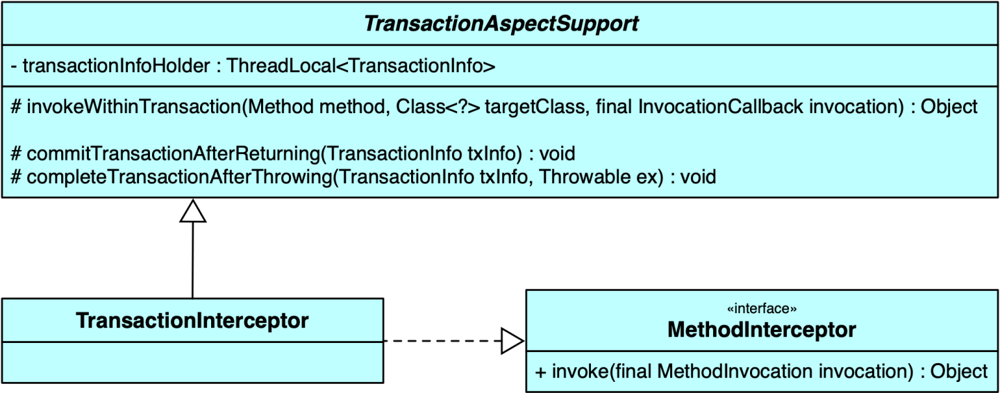

Spring 与数据库
Java 执行事务的过程
1.获取连接 Connection con = DriverManager.getConnection()
2.开启事务con.setAutoCommit(true/false); 在 Spring 事务里（如 DataSourceTransactionManager 的 doBegin 方法）里，总是会显式地 con.setAutoCommit(false);（不然哪有事务可言）。
3.执行CRUD
4.提交事务/回滚事务 con.commit() / con.rollback();
5.关闭连接 conn.close();
本文涉及到的类型的类图



Spring 的事务管理核心类型和流程
DataSource
不同的数据源诞生不同的 DataSource。默认的 TransactionManager 本身是期待一个名叫“datasource”的数据源的。
FactoryBean
不同的 DataSource 装入不同的 FactoryBean，比如 JPA 的 EntityManagerFactory。
PlatformTransactionManager
桥接模式的实现端。
不同的 FactoryBean 装入不同的 PlatformTransactionManager，比如 JpaTransactionManager（实际上还可以被细分为 TransactionManager/EntityManager/SessionFactory/PersistenceUnit）。PlatformTransactionManager 管很多东西，如数据库方言、数据源（FactoryBean 也持有这个东西，但某些事务管理器宁愿自己冗余一份数据源方便自己处理）。
这个类型可以当做 API 用，但 Spring 官方推荐应该通过 AOP （所以它要被装入 Interceptor）或者 TransactionTemplate 使用。
它提供三个基本接口：
1 | |
TransactionDefinition
事务定义 TransactionDefinition 包含很多属性：
- 是否只读
- 事务隔离级别
- 事务传播级别
- 超时
通过事务的定义，我们根据定义产生特定的事务实例 - 基本上 @Transactional注解里标记的信息都持有在这里。
TransactionStatus
每个事务实例在 TransactionStatus 接口 里，事务管理器通过状态可以知道事务的状态信息，然后进行事务的控制。事务是否完成，是否是新的事务，是不是只能回滚等。
对于 TransactionDefinition 而言，transaction status object representing the new or current transaction。
TxAdviceBeanDefinitionParser
基于 xml的配置，由 TxAdviceBeanDefinitionParser 负责生成 TransactionInterceptor 对象。
ProxyTransactionManagementConfiguration
基于注解的配置，由 ProxyTransactionManagementConfiguration 负责生成 TransactionInterceptor 对象。
TransactionInterceptor
TransactionInterceptor 继承了 TransactionAspectSupport（桥接模式的抽象端）。
它通过装入 PlatformTransactionManager ptm 来扩展 TransactionAspectSupport 的行为，类似桥接模式。
其事务执行关键代码是（注意，这段代码和 TransactionAspectSupport.invokeWithinTransaction是相互回调的关系）：
1 | |

TransactionAspectSupport
TransactionAspectSupport 提供了 transaction infrastructure，是 Spring 的一切事务 Aspect 的重要祖先。
它使用一个 NamedThreadLocal 来保存当前的 TransactionInfo（包含了 TransactionStatus），所以每个事务就是线程隔离的。
1 | |
AbstractPlatformTransactionManager
所有的 应该从这个类型里派生出来，它提供了如下便利：
- 定义了（事务）传播行为
- 提供了事务同步服务
它的参考实现是JtaTransactionManager和DataSourceTransactionManager。
其中管理事务提交的代码
1 | |
DataSourceTransactionManager
MyBatis 的数据源实际上使用的事务管理器在这里：
1 | |
MyBatis
事务边界
SqlSessionUtils
// 每一段 sql 执行的时候都会执行这个操作
2020-03-31 23:30:30,056 [main] DEBUG (SqlSessionUtils:97) - Creating a
new SqlSession 2020-03-31 23:30:30,060 [main] DEBUG
(SqlSessionUtils:128) - Registering transaction synchronization for
SqlSession
[org.apache.ibatis.session.defaults.DefaultSqlSession@2cee1bcf] //
这里虽然 closeSession，并没有破坏事务的原子性 2020-03-31 23:30:30,307 [main] DEBUG
(SqlSessionUtils:186) - Releasing transactional SqlSession
[org.apache.ibatis.session.defaults.DefaultSqlSession@2cee1bcf]
2020-03-31 23:31:27,389 [main] DEBUG
(SqlSessionUtils$SqlSessionSynchronization:284) - Transaction
synchronization committing SqlSession[org.apache.ibatis.session.defaults.DefaultSqlSession@2cee1bcf]
2020-03-31 23:31:27,398 [main] DEBUG
(SqlSessionUtils$SqlSessionSynchronization:310) - Transaction
synchronization deregistering SqlSession
[org.apache.ibatis.session.defaults.DefaultSqlSession@2cee1bcf]
// 但只有整个事务提交的时候会执行这个操作 commitTransactionAfterReturning ->
Connection.commit
mapper 的依赖

Spring Boot 的增强设计
在 Spring-Boot 的
各种 spring-data-* 会根据 TransactionManagementConfigurationSelector 自动激活特定的 DataSource 以及相应的 TransactionManager。
Spring 的声明式事务
七个传播性配置
- TransactionDefinition.PROPAGATION_REQUIRED：如果当前存在事务，则加入该事务；如果当前没有事务，则创建一个新的事务。这是默认值。
- TransactionDefinition.PROPAGATION_REQUIRES_NEW：创建一个新的事务，如果当前存在事务，则把当前事务挂起。
- TransactionDefinition.PROPAGATION_SUPPORTS：如果当前存在事务，则加入该事务；如果当前没有事务，则以非事务的方式继续运行。（注意这里，不要采坑）
- TransactionDefinition.PROPAGATION_NOT_SUPPORTED：以非事务方式运行，如果当前存在事务，则把当前事务挂起。
- TransactionDefinition.PROPAGATION_NEVER：以非事务方式运行，如果当前存在事务，则抛出异常。
- TransactionDefinition.PROPAGATION_MANDATORY：如果当前存在事务，则加入该事务；如果当前没有事务，则抛出异常。
- TransactionDefinition.PROPAGATION_NESTED：如果当前存在事务，则创建一个事务作为当前事务的嵌套事务来运行；如果当前没有事务，则该取值等价于TransactionDefinition.PROPAGATION_REQUIRED。
1 可以保证嵌套事务使用同一个事务。
2 则要考虑嵌套事务时，内层事务挂起外层事务的问题，只有内层事务退出（不管正常还是不正常），外层事务才会逐步进入自己的余下的步骤。2 生成的事务是全新的事务。它拥有自己独立的隔离级别，持有自己的锁。这种传播性是用于某类 sequence 生成 id 的嵌套，让 id 生成的子事务不持有太久的数据库锁-因为数据库两段式提交的方式，如果子事务被大事务套住了，子事务的锁要最后才提交。
7 意味着创建的事务是嵌套的事务，它的提交受外部事务控制，而回滚是否影响外部事务由外部事务自己决定。它会产生 savepoint。默认的情况下，子事务的回滚应该触发父事务的回滚，但在某些大任务拆解，逐步执行子事务的场景下，个别子事务的回滚可以被吞掉，以有效地保证外部事务的部分成功。
具体说明见 Juergen Hoeller 的说明：
PROPAGATION_REQUIRES_NEW starts a new, independent “inner” transaction
for the given scope. This transaction will be committed or rolled back
completely independent from the outer transaction, having its own
isolation scope, its own set of locks, etc. The outer transaction will
get suspended at the beginning of the inner one, and resumed once the
inner one has completed.Such independent inner transactions are for example used for id
generation through manual sequences, where the access to the sequence
table should happen in its own transactions, to keep the lock there as
short as possible. The goal there is to avoid tying the sequence locks
to the (potentially much longer running) outer transaction, with the
sequence lock not getting released before completion of the outer
transaction.PROPAGATION_NESTED on the other hand starts a “nested” transaction,
which is a true subtransaction of the existing one. What will happen
is that a savepoint will be taken at the start of the nested
transaction. íf the nested transaction fails, we will roll back to
that savepoint. The nested transaction is part of of the outer
transaction, so it will only be committed at the end of of the outer
transaction.Nested transactions essentially allow to try some execution subpaths
as subtransactions: rolling back to the state at the beginning of the
failed subpath, continuing with another subpath or with the main
execution path there - all within one isolated transaction, and not
losing any previous work done within the outer transaction.For example, consider parsing a very large input file consisting of
account transfer blocks: The entire file should essentially be parsed
within one transaction, with one single commit at the end. But if a
block fails, its transfers need to be rolled back, writing a failure
marker somewhere. You could either start over the entire transaction
every time a block fails, remembering which blocks to skip - or you
mark each block as a nested transaction, only rolling back that
specific set of operations, keeping the previous work of the outer
transaction. The latter is of course much more efficient, in
particular when a block at the end of the file fails.
不同事务传播策略下嵌套事务的行为
使用嵌套事务的场景有两点需求：
- 需要事务BC与事务AD一起commit，即：作为事务AD的子事务，事务BC只有在事务AD成功commit时（阶段3成功）才commit。这个需求简单称之为“联合成功”。这一点PROPAGATION_NESTED和PROPAGATION_REQUIRED可以做到。
- 需要事务BC的rollback不（无条件的）影响事务AD的commit。这个需求简单称之为“隔离失败”。这一点PROPAGATION_NESTED和PROPAGATION_REQUIRES_NEW可以做到。
换言之：
- 默认的传播级别（PROPAGATION_REQUIRED），使得子事务只要失败，父事务也只能回滚-rollbackOnly。
- 使用 PROPAGATION_REQUIRES_NEW，嵌套事务会被独立提交，而且一定会发生隔离失败（即使没有发生外部的 catch）。
- 能够让子事务和父事务一起提交的，只有 PROPAGATION_NESTED了。PROPAGATION_NESTED在事务AD执行到B点时，设置了savePoint（关键）。而且如果子事务失败，则父事务不会失败。
设置 savepoint 的关键流程在AbstractTransactionStatus里的
1 | |
savepoint 是 jdbc 的 Connection 的概念（这也是一种“嵌套事务”里特有的概念），可被命名也可以不被命名（命名通常是 SAVEPOINT_计数器）。它代表着事务的一个位置，rollback 可以只 rollback 到 savepoint，然后当前事务自己决定是继续 rollback 还是继续 proceed。回滚到 savepoint 可以使用如下语句：
1 | |
事务只读属性
只读事务用于客户代码只读但不修改数据的情形，只读事务用于特定情景下的优化，比如使用Hibernate的时候。
“只读事务”并不是一个强制选项，它只是一个“暗示”，提示数据库驱动程序和数据库系统，这个事务并不包含更改数据的操作，那么JDBC驱动程序和数据库就有可能根据这种情况对该事务进行一些特定的优化，比方说不安排相应的数据库锁，以减轻事务对数据库的压力，毕竟事务也是要消耗数据库的资源的。
但是你非要在“只读事务”里面修改数据，也并非不可以，只不过对于数据一致性的保护不像“读写事务”那样保险而已。
因此，“只读事务”仅仅是一个性能优化的推荐配置而已，并非强制你要这样做不可。
事务超时
所谓事务超时，就是指一个事务所允许执行的最长时间，如果超过该时间限制但事务还没有完成，则自动回滚事务。在 TransactionDefinition 中以int 的值来表示超时时间，其单位是秒。
默认设置为底层事务系统的超时值（注解的默认值是-1），如果底层数据库事务系统没有设置超时值，那么就是none，没有超时限制。
其他设置事务超时的方法：
- 在 jdbc 连接字符串里配置（这个方法最好）。
- 在数据库层面配置。
- 在中间件层面配置。
参考：